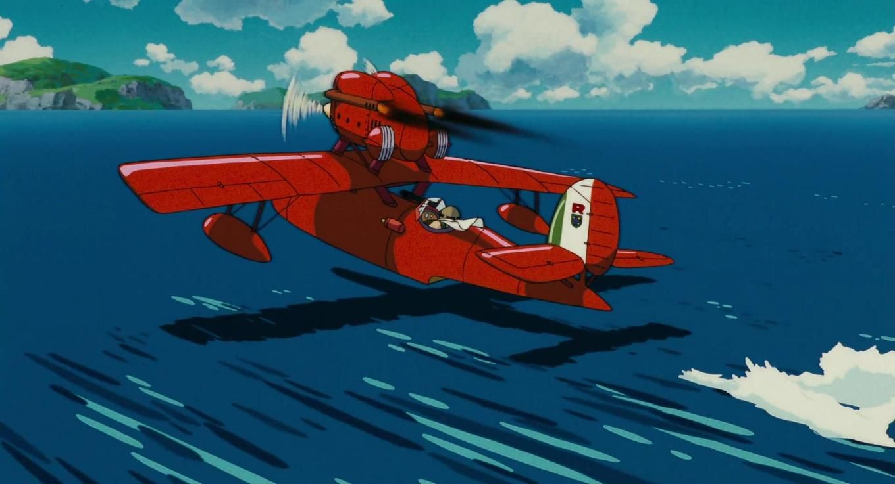

Nato nel 1893, Marco Pagot è un asso della Regia Aeronautica che durante un combattimento nel corso della prima guerra mondiale ha un'esperienza di premorte. Miracolosamente sopravvissuto, ne è uscito sfigurato al volto, che ha assunto[1] l'aspetto del muso di un maiale. Abbandonata l'aeronautica e la vita mondana (compreso l'amore per Gina, una sua amica d'infanzia divenuta proprietaria di un albergo allestito su un'isoletta dell'Adriatico[2] e frequentato da contrabbandieri ammaliati dalle sue doti canore e dalla sua bellezza), si ritira sulla costa dalmata, guadagnandosi da vivere con le taglie poste sui pirati dell'aria che combatte con il suo idrovolante monoplano Savoia S.21 (o S.21 "Folgore", dopo aver montato l'omonimo motore)[3], dipinto di rosso, da cui il soprannome "Porco Rosso". La narrazione ha inizio nel luglio 1929. L'abilità di Marco lo ha ormai reso un temibile ostacolo per i pirati dell'aria, che per contrastarlo riuniscono le loro forze in un'alleanza e ingaggiano un altro asso dell'aviazione, lo statunitense Donald Curtis. Donald, con il suo velocissimo idrocorsa Curtiss R3C, raggiunge e affronta Marco, che sta dirigendosi a Milano per far riparare il suo aereo bisognoso di una revisione al motore. Durante la battaglia, alla quale peraltro Marco non appare interessato, il suo aereo ha l'ennesima avaria e il motore si spegne del tutto. A causa delle improvvise difficoltà di manovra dell'aereo, Donald riesce ad abbatterlo e, ritrovando in mare un pezzo dell'aereo, se ne va convinto di aver finalmente ucciso Porco Rosso. In realtà Marco sopravvive alla battaglia e con quanto rimane del suo aereo raggiunge la Piccolo S.p.A. di Milano per farlo riparare e potenziare, montandoci un motore V12 "Folgore", in vista della rivincita contro Curtis. Dal momento che i tre figli del signor Piccolo sono emigrati in America in cerca di lavoro, come pure tutti gli altri uomini e operai che lavoravano nella ditta, la ristrutturazione e progettazione del nuovo aereo vengono affidate alla giovane Fio, la nipote diciassettenne del signor Piccolo. Marco all'inizio si mostra riluttante, ma di fronte alla determinazione e alla bravura della ragazzina si lascia convincere, anche se per riuscire a rimettere a posto l'aereo è costretto a indebitarsi. Durante la sosta a Milano Marco incontra il suo amico ed ex-compagno d'armi Arturo Ferrarin, ora maggiore della Regia Aeronautica, che dopo aver tentato invano di convincerlo a rientrare in aviazione lo informa che i fascisti lo stanno cercando. Sfuggito agli squadroni punitivi, Marco lascia Milano con il suo aereo appena riparato assieme a Fio, che lo convince a portarla con sé per occuparsi della messa a punto del velivolo, che a causa della forzata e improvvisa partenza non aveva potuto essere sottoposto alle previste prove di volo. Nel frattempo Curtis, donnaiolo e narcisista, cerca di conquistare Gina, dicendole anche che ad Hollywood sono interessati a lei come aspirante attrice, ma la donna risponde che anni addietro ha scommesso con se stessa di aspettare una certa persona nel suo giardino privato anche per tutta la vita, e che, se quell'uomo dovesse un giorno presentarsi a lei alla luce del sole, allora lei sarebbe pronta ad amarlo. Non appena finisce la frase si sente il rumore di un aereo in lontananza. Gina vede l'S.21 rosso nuovo di zecca di Porco che comincia a fare delle acrobazie sopra la casa. Gina non è la sola a stupirsi, anche Curtis rimane senza fiato, scoprendo che Marco è ancora in vita. Dopo tante acrobazie, Porco lancia l'aereo verso l'orizzonte e sparisce. "Che strano, non si è fermato" dice tra sé e sé Gina, "Credo proprio di aver perso di nuovo la scommessa". Si apprende così che nonostante Marco avesse rinunciato ai suoi sentimenti per Gina e che, come lei stessa racconta, si fosse sposata tre volte con un pilota di idrovolanti (tutti e tre morti o dispersi in battaglia o incidenti aerei con il primo dei quali, Bellini, compagno di squadriglia di Marco), l'unico che Gina abbia mai davvero amato era proprio Marco. Quindi respinge l'avance di Donald e si allontana, lasciandolo sbigottito e senza parole. Intanto Porco e Fio fanno ritorno nel rifugio di Marco, un'isoletta sull'Adriatico. Non appena vi approdano, però, i due vengono assaltati dai pirati del cielo, ansiosi di prendersi la loro rivincita nei confronti di Porco Rosso. Fio però interviene nella disputa, trattenendoli con le sue parole: li arringa deridendoli e rimproverandoli per aver svenduto il loro orgoglio di aviatori e per essersi affidati ad uno straniero. La ragazza riesce a convincere Donald Curtis, anche lui arrivato sull'isola-rifugio, a misurarsi in un duello ad armi pari con Marco per l'onore dei piloti di idrovolanti: se Donald Curtis perderà dovrà saldare di sua tasca le fatture in sospeso di Porco Rosso con la ditta Piccolo per il restauro del suo aereo, se invece vincerà potrà sposare la giovane Fio. Durante la notte, mentre Porco controlla le munizioni per il duello dell'indomani, a Fio sembra di scorgere il volto umano di Marco che, accortosi che la ragazza è sveglia, le racconta come è avvenuta la sua trasformazione durante la prima guerra mondiale. Il giorno dopo il duello richiama una grande folla ed è senza esclusione di colpi. Dopo aver inseguito Curtis, al momento decisivo la mitragliatrice di Porco Rosso si inceppa e quella dell'avversario è scarica. I due a quel punto iniziano a tirarsi leve e pezzi vari degli abitacolo - ammarati - e decidono di concludere lo scontro a suon di pugni. Curtis insulta Marco rimproverandolo di aver fatto soffrire Gina che lo sta ancora aspettando innamorata, e per lo stupore e l'imbarazzo si lascia mettere KO, ma reagisce accusando l'avversario di essere un bugiardo. Alla fine - quando l'incontro sembra debba finire alla pari - a vincere è Marco, incalzato dalla stessa Gina che lo sprona ammonendolo di non spezzare il cuore a un'altra ragazza (cioè Fio). Gina era giunta per informare dell'imminente sopraggiungere della Regia Aeronautica per stroncare quel raduno clandestino, i pirati e gli altri spettatori sono costretti ad andarsene in tutta fretta; Marco affida Fio a Gina perché la riporti "nel mondo della gente rispettabile", mentre lui e Curtis (che sembra aver notato qualcosa di strano nella faccia del suo avversario dopo un bacio rubatogli da Fio) si offrono di fare da esca agli inseguitori per permettere agli altri di scappare. Passano gli anni. Gina e Fio diventano grandi amiche, e superano insieme gli anni del ventennio fascista e della seconda guerra mondiale. L'hotel Adriano gestito da Gina continua ad essere una rinomata meta turistica, frequentato anche dagli ormai anziani pirati dell'aria e Curtis, tornato in America, è diventato un attore, ma continua a scrivere lettere a Fio ricordando con nostalgia quell'estate sull'Adriatico. Riguardo a come si sia conclusa la scommessa di Gina, la ragazza divenuta donna risponde agli spettatori che "è un segreto soltanto nostro".